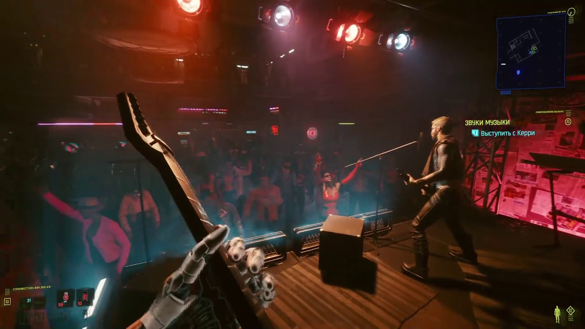

SAMURAI - культовая рок-группа, основанная в 2000 году в Найт-Сити. Их музыка сочетает панк-рок, метал и индастриал. Коллектив распался в 2008, но остаётся символом бунта против корпораций. Вокалист - Джонни Сильверхенд, гитарист - Керри Евродин.
Основные достижения: три студийных альбома, платиновый статус «No Future», хит «Chippin' In» - негласный гимн рокеров, аншлаги на стадионах.

(пример трека - Chippin' In)
| Участник | Роль | Годы активности |
|---|---|---|
| Johnny Silverhand | вокал, гитара | 2000–2008 |
| Kerry Eurodyne | гитара, бэк-вокал | 2000–2008 |
| Denny | бас-гитара | 2001–2008 |
| Nancy | клавишные | 2003–2008 |
| Henry | ударные | 2000–2008 |
Внешний CSS – файл style.css
Внутренний CSS – тег style
Импортированный CSS – @import url('import.css')
Инлайн-стиль – атрибут style